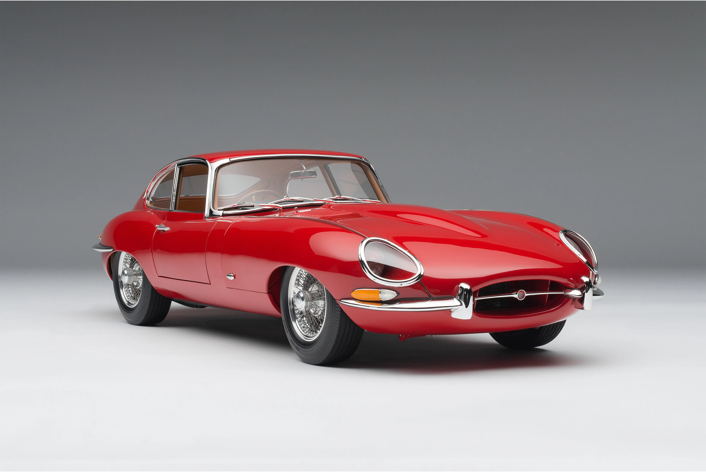

Ford Mustang 1967
Un ícono americano que combina potencia y estilo. El Mustang 1967 es famoso por su diseño agresivo y motor V8 robusto.
- Motor: V8 4.7L
- Potencia: 271 hp
- Transmisión: Manual 4 velocidades
- Origen: Estados Unidos
Bentley S2 Continental 1959
Clásico de lujo británico que representa la elegancia y el refinamiento de la alta automoción de finales de los años 50 y principios de los 60.
- Motor: V8 6.6L
- Potencia: 345 hp
- Transmisión: Automática
- Origen: Estados Unidos


Aston Martin DB5 1964
Símbolo icónico del lujo y el estilo americano de finales de los años 50. Con un diseño espectacular, este convertible representaba lo máximo en elegancia.
- Motor: Inline-6 4.0L
- Potencia: 282 hp
- Transmisión: Manual 5 velocidades
- Origen: Estados Unidos